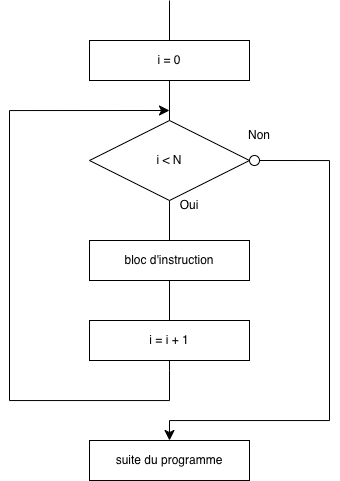
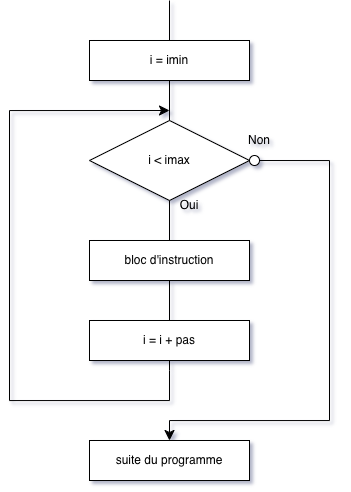
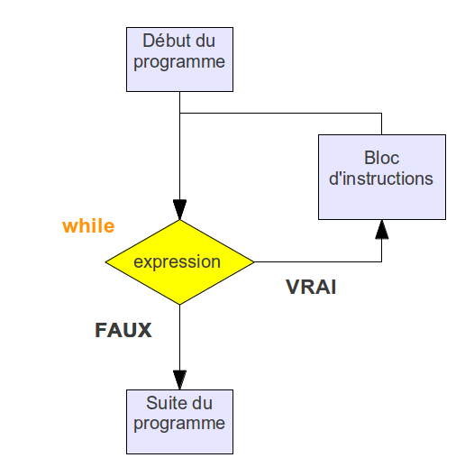

Contrôle du flux d'exécution#
Introduction#
Jusqu'à présent, nous avons vu des algorithmes simples qui se déroulent en séquence de la première à la dernière instruction.
Cependant, ces instructions en séquence ne suffisent pas à exécuter des algorithmes plus complexes où :
- Certaines séquences d'instructions ne peuvent être exécutées que sous certaines conditions : structures conditionnelles (if... else)
- Certaines séquences d'instructions nécessitent d'être exécutées un certain nombre de fois : structures itératives (boucle for et boucle while)
Le chemin suivi par le programme est appelé le flux d'exécution et les instructions qui le modifient sont appelées les instructions de contrôle de flux.
La structure conditionnelle "if - else"#
En Python, voici la structure :
if condition :
instruction(s) à effectuer dans la cas où la condition est remplie
else :
instruction(s) à effectuer dans la cas contraire
Remarque :
- Le bloc
elsen'est pas obligatoire - Vous remarquerez le symbole
:très important en Python qui marque le début d'un bloc. - C'est l'indentation (le décalage) qui délimite le bloc d'instructions.
Les conditions doivent nécessairement introduire de nouveaux opérateurs, dits opérateurs de comparaison. Ces opérateurs sont les suivants :
| Opérateur | Signification littérale |
|---|---|
| < | strictement inférieur à |
| > | strictement supérieur à |
| <= | inférieur ou égal à |
| >= | supérieur ou égal à |
| == | égal à |
| != | différent de |
Ces opérateurs de comparaisons peuvent être combinés aux opérateurs logiques (ou opérateurs booléens) suivants :
| Opérateur | Rôle |
|---|---|
| a and b | Vraie si a et b sont vraie |
| a or b | vraie si a ou b (ou les deux) sont vraies |
| not(a) | si a est vraie, not(a) est fausse et inversement |
Exemple : le programme suivant détermine si le candidat aura une mention BIEN. Pour cela sa note doit être supérieure ou égale à 12 et inférieure strictement à 14 :
Exercice 1
Que fait le programme suivant ? Placer des commentaires aux lignes 2 et 4.
Exercice 2
Qu'affiche le programme de l'exemple dans chacun des cas suivants :
- Avec
a = 8? - Avec
a = -6? - Avec
a = 0? - Avec
a = "positif"?
Exercice 3
Écrire un programme qui :
- Demande l'âge d'une personne ;
- Affiche si la personne est majeure où mineure.
L'instruction elif#
Il est possible de simplifier l'écriture de ces imbrication en utilisant le mot clé elif qui est la contraction de else if.
La structure elif :
if condition1 :
instruction(s)
elif condition2 :
instruction(s)
elif condition3 :
instruction(s)
else :
instruction(s)
Exemple :
Exercice 4
Un cinéma pratique trois types de tarifs pour deux personnes.
- si les deux personnes sont mineures, elles payent 7€ chacune,
- si l'une seulement est mineure, elles payent un tarif de groupe de 15€,
- si les deux personnes sont majeures, elles payent 18 € en tout.
Écrire un programme qui :
- Demande l'âge de chacune des personnes,
- Affiche le prix à payer
Exercice 5
Dans une école de rugby, il y a quatre groupes :
- le groupe des U8 pour les joueurs entre 8 ans inclus et 10 ans exclus ;
- le groupe des U10 pour les joueurs entre 10 ans inclus et 12 ans exclus ;
- le groupe des U12 pour les joueurs entre 12 ans inclus et 14 ans exclus ;
- le groupe des U14 pour les joueurs entre 14 ans inclus et 16 ans exclus.
Le dirigeant veut qu'un enfant, accompagné de ses parents, allant sur le site Internet de l'école puisse connaître le groupe qui lui correspondrait une fois son âge saisi.
Ne sachant comment structurer le programme, il fait appel à vous afin que vous lui écriviez un programme, écrit en langage Python, qui demande l'âge de l'enfant et renvoie la catégorie une fois la saisie de l'âge effectuée.
Les boucles#
La boucle for#
version par défaut#
La boucle for, comme on l'a déjà vu, nous sert à répéter un certain nombre de fois N un bloc d'instructions. Dans le cas de la boucle for, le nombre de fois où le bloc d'intruction est répété est connnu. On l'indique grâce à :
Plus précisement, la boucle forfonctionne ainsi :

Exemple :
Remarque :
- l'instruction
break, à l'intérieur de la boucleforprovoque une sortie immédiate d'une bouclefor iest un nom de variable usuel mais on peut tout aussi bien utiliser un autre nom de variable (exemple : compteur)
Exercice 6
Écrire un programme, qui affiche 50 fois ”Je dois ranger mon bureau” à l’aide d'une boucle for.
On peut avoir besoin aussi du "tour de boucle courant".
Exemple : le code suivant affichera 0, 1, 2, 3,.., 8, 9
Exercice 7
Écrire un programme qui effectue la table de multiplication par 7 et qui l’affiche.
Version complète#

Syntaxe :
Avec :
imin: valeur de départ de la variablei(0 par défaut);imax: valeur d'arrêtide la variable. Dans la partie précédente,imaxest appeléN.pas: la variable va deiminàimaxpar pas (1 par défaut).
Exemple :
Ce programme affichera : 3, 5, 7, 9
La boucle while#
La boucle while , "tant que " en français, sert à répeter un bloc d'instruction tant que une condition est vraie. Autrement dit, on n'a pas besoin de connaître le nombre de fois où le bloc d'instructions doit être répété.

Syntaxe :
while expression: # ne pas oublier le signe '
#bloc d'instructions# attention à l'indentation
# suite du programme
Si l'expression est vraie (True) le bloc d'instructions est exécuté, puis l'expression est à nouveau évaluée.
Le cycle continue jusqu'à ce que l'expression soit fausse (False) : on passe alors à la suite du programme.
Exercice 8
Quel est le résultat attendu après l’exécution du programme ci-dessous ?
Exercice 9
Écrire un programme, qui affiche 50 fois ”Je dois ranger mon bureau” à l’aide de l’instruction While
Exercice 10
Écrire un programme à l'aide de la boucle while qui effectue la table de multiplication par 7 et qui l’affiche.
Exercice 11 : bonus
Écrire une boucle while qui permet d’afficher :
Exercice 12 : Bonus
Écrire le script du jeu de devinette suivant. Le jeu consiste à deviner un nombre entre 1 et 100. Le programme demande à l'utilisateur de rentrer une valeur et le programme lui affiche si ce nombre est trop petit, trop grand ou gagné. Le programme compte aussi le nombre d'essai pour trouver la bonne valeur.
Exemple :
Données : pour choisir un nombre au "hasard", on utilise la fonction randint() de la bibliothèque
random.
Exemple :
True ou False.